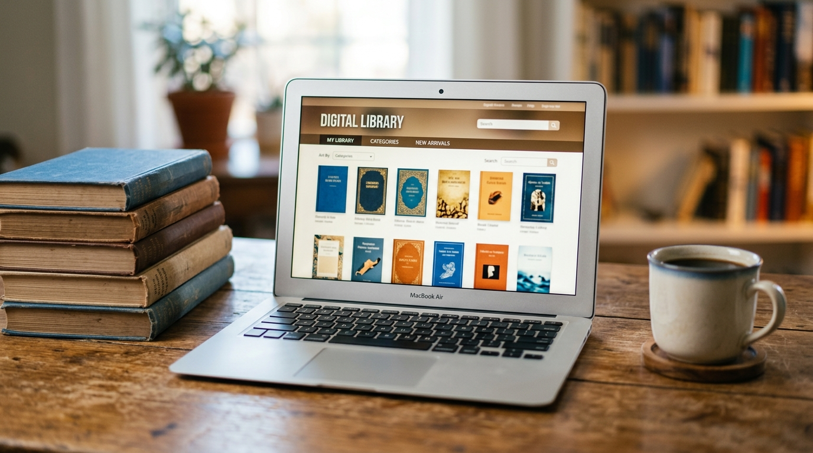
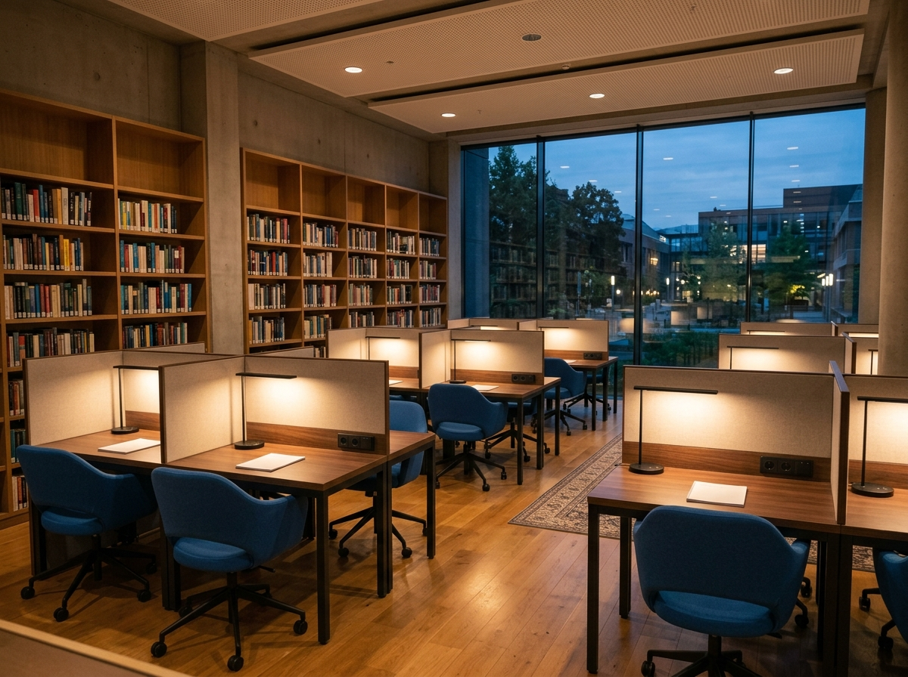
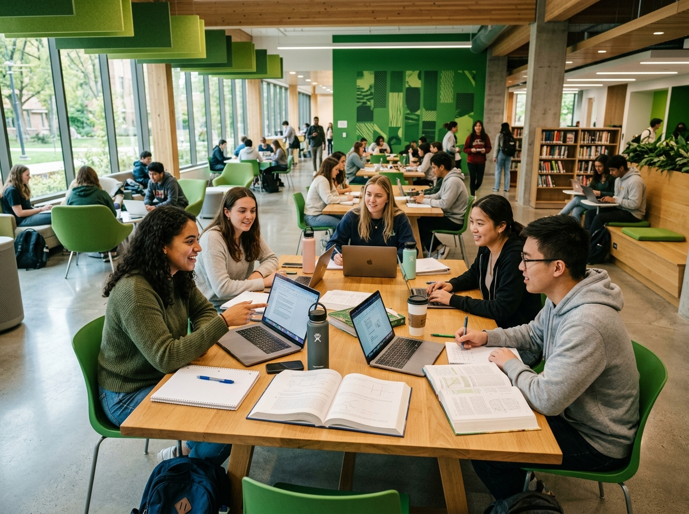

Design Web
Fundamentos de HTML e CSS para criar páginas modernas e responsivas.
Saiba maisA Biblioteca Digital UniFECAF reúne livros, artigos e materiais de apoio selecionados para acompanhar cada etapa da sua formação. Tudo organizado por categorias para você encontrar o que precisa com rapidez.
Além do acervo online, oferecemos espaços de estudo, empréstimo de livros físicos e orientação para pesquisas acadêmicas. Acesse pelo computador ou pelo celular, a qualquer hora do dia.

Acervo digital
Salas de estudo
Estudo em grupoFundamentos de HTML e CSS para criar páginas modernas e responsivas.
Saiba maisAprenda a pensar como programador com exemplos práticos e exercícios.
Saiba maisPlanejamento, metodologias ágeis e liderança de equipes.
Saiba maisModelagem de dados e consultas SQL do básico ao avançado.
Saiba maisComo criar produtos digitais simples, úteis e agradáveis de usar.
Saiba maisGuia para pesquisas acadêmicas, normas ABNT e escrita do TCC.
Saiba maisNossa maior unidade, com acervo físico completo, atendimento presencial e computadores para consulta. Aberta de segunda a sábado, das 7h às 22h.
Ambiente silencioso com cabines individuais, tomadas e Wi-Fi. Ideal para leitura, revisão para provas e produção de trabalhos.
Mesas compartilhadas para trabalhos em grupo, debates e projetos integradores. Reserve seu horário direto com a equipe da biblioteca.
Ficou com alguma dúvida sobre o acervo, empréstimos ou acesso à plataforma? Fale com a nossa equipe, será um prazer ajudar.